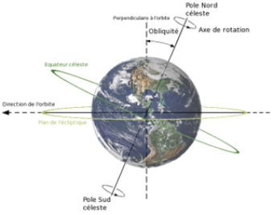

Objectifs
Être en mesure de déterminer la direction à l’aide des constellations dans un exercice de campagne.
Introduction
Savoir comment identifier l’étoile polaire (Polaris), comme référence stellaire première pour déterminer la direction lors d’un exercice en campagne.
OCOM C240.06 S'orienter à l'aide des constellations pendant un exercice d'entraînement en campagne
PE 1 :Déterminer une direction la nuit à l'aide de l'étoile Polaire.
Fondamental :
Zoom Dna-webmaster. Obliquite plan ecliptique. Consulté le 13 août 2020, | La Terre est en état de mouvement continuel en tournant sur son axe. Rotation complète toutes les 24 heures. Points où l’axe croise la surface : Pôle Nord et pôle Sud. Sur la surface de la Terre, la rotation n’est pas perceptible. |
Relation entre le Nord et l'étoile Polaire
L'étoile Polaire ou étoile du Nord :
Elle brille peu.
Utilisée pour déterminer le Nord.
Point fixe situé au-dessus du pôle Nord.
Point central alors que les autres constellations tournent autour.
Située à la pointe de la Petite Ourse, on peut la trouver à l’aide de la Grande Ourse et la Cassiopée.
La Grande Ourse
Partie d’une grande constellation tournant autour de l’étoile Polaire.
Composée de 7 étoiles.
Bol muni d'une poignée.
Pour trouver l’étoile Polaire: repérer les deux étoiles de pointage, qui forment une ligne droite vers le Nord.
Distance entre Dubhe et l’étoile Polaire : 5 fois la distance entre les étoiles de pointage.
Cassiopée
Elle a la forme d’un W ou d’un M (selon l’heure de la nuit).
Elle tourne autour de l’étoile du Nord.
Perpendiculaire à l’étoile Polaire lorsque les pattes du M se rejoignent.
La distance entre la Cassiopée et l’étoile Polaire est deux fois la largeur du M.
Simulation : Démonstration
Identifier les étoiles de pointage.
Identifier l’étoile Polaire à l’aide de la Grande Ourse.
Identifier l’étoile Polaire à l’aide de la Cassiopée.
Question sur le nom commun de l'étoile Polaire ?
Quel est le nom commun de l’étoile Polaire?
Quel est le nom commun de l’étoile Polaire?
Question sur la distance entre l’étoile Dubhe et l’étoile Polaire.
Quelle est la distance entre l’étoile Dubhe et l’étoile Polaire?
Quelle est la distance entre l’étoile Dubhe et l’étoile Polaire?
Question sur la constellation d'appartenance de l'étoile Polaire
De quelle constellation l’étoile Polaire fait-elle partie?
De quelle constellation l’étoile Polaire fait-elle partie?
Contact
steve.prudhomme@escadron518.com